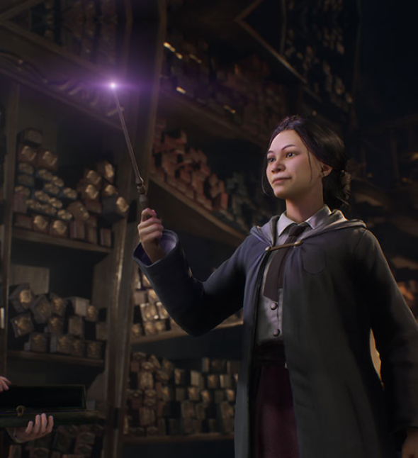
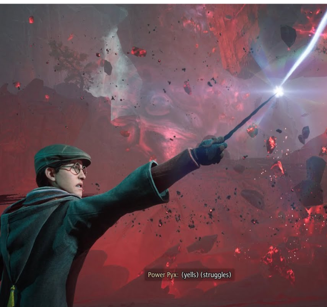
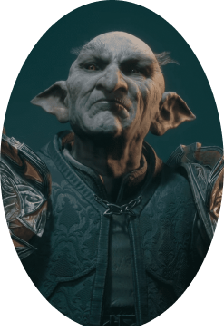

HOGWARTS LEGACY
Sobre Hogwarts Legacy
Hogwarts Legacy es un juego de rol desarrollado por Avalanche Software, Portkey Games y Warner Games. Lanzado el 10 de febrero de 2023, se convirtió en el juego más vendido de todo el año 2023. Sumérgete en el mundo de la magia en el año 1890 como un joven estudiante de Hogwarts que ingresa a estudiar al colegio en el quinto año, una situación poco común que promete una experiencia única desde el principio. En Hogwarts Legacy, tendrás la oportunidad de crear tu propio personaje, ya sea hombre o mujer, y descubrirás que posees un don especial: la capacidad de ver rastros de magia antigua, un talento único que te llevará a increíbles aventuras. Una de las primeras decisiones importantes que tomarás es la personalización de tu varita, que será tu herramienta más poderosa en tu viaje hacia la grandeza. Además, podrás elegir tu casa en Hogwarts: Gryffindor (la casa de Harry Potter); Slytherin; Ravenclaw y Hufflepuff, cada una con su propia historia y características distintivas. Dependiendo de la casa que elijas, tus aventuras y desafíos variarán, lo que promete una experiencia de juego dinámica y personalizada. Explora un mundo lleno de posibilidades con el emocionante sistema de mundo abierto de Hogwarts Legacy. Desde el majestuoso castillo de Hogwarts hasta los pueblos lejanos y los misteriosos rincones del mundo mágico, tendrás la libertad de recorrer y descubrir todos los secretos que aguardan en cada rincón.
Jugabilidad
En este juego, no solo tendrás la oportunidad de explorar el icónico mundo de Hogwarts, sino que también podrás participar en emocionantes duelos mágicos y enfrentamientos épicos. El modo de combate ofrece una amplia variedad de encantamientos, hechizos y maldiciones para que explores y domines. ¡Duelea con otros magos y desata ataques especiales, bloquea los ataques de tus oponentes y utiliza la magia antigua para realizar ataques devastadores! Pero la aventura no se detiene en los duelos. ¡Explora el mundo mágico y encuentra personajes que te brindarán misiones de todo tipo! Algunas serán tranquilas y simples, mientras que otras te llevarán a enfrentar desafíos peligrosos y emocionantes. Además, no te pierdas los emocionantes minijuegos dispersos por todo el mapa, que ofrecen una variedad de actividades divertidas y desafiantes para disfrutar. Además de las misiones y los duelos, Hogwarts Legacy ofrece una amplia gama de actividades adicionales para que explores. ¿Has oído hablar de la famosa Sala de los Menesteres? ¡En este juego, tendrás tu propio espacio en la Sala de los Menesteres, donde podrás diseñar y decorar tu propia habitación con los muebles que elijas! Además, podrás cuidar diferentes tipos de animales mágicos, que podrás encontrar y atrapar en todo el mundo mágico. ¡Pero eso no es todo! ¡También tendrás la oportunidad de convertirte en un experto en pociones y herbología! Asiste a la clase de Pociones en Hogwarts o prepara tus propias pociones en tu propio caldero, que podrás comprar en Hogsmeade. ¡Además, podrás cultivar y cuidar diferentes tipos de plantas mágicas, que te brindarán habilidades especiales y valiosos recursos para tus aventuras!
Trailer Cinematográfico
Tres finales
A lo largo de tu travesía en el mundo mágico de Hogwarts Legacy, te encontrarás con tres posibles finales que definirán el rumbo de tu aventura. Durante tus interacciones con los diversos personajes que encuentras a lo largo de tu viaje, tendrás la libertad de elegir entre aceptar sus peticiones pero hacer lo contrario a ayudarlos, lo que puede afectar drásticamente la percepción que otros tienen de ti. ¿Optarás por ser un mago benevolente y ayudar a aquellos que lo necesitan, o seguirás tu propio camino sin preocuparte por las consecuencias? Al completar toda la historia, te aguardan dos finales alternativos, cada uno con sus propias ramificaciones en el mundo mágico. En el primero, te convertirás en el héroe que salva al mundo mágico de una amenaza poderosa y oscura, demostrando tu valentía y habilidad para enfrentar el mal. Sin embargo, en el segundo final, te sumergirás en la oscuridad y te convertirás en un mago tenebroso, ansioso por obtener y controlar todo el poder peligroso que encuentres en tu camino. ¿Te dejarás tentar por el lado oscuro y sacrificarás tu moral en busca de poder absoluto? Pero espera, ¡hay más! Existe un tercer final, reservado solo para aquellos que completan el juego al 100%. Este final revelará un destino aún más sorprendente y satisfactorio, brindándote una conclusión única y gratificante para tu épica aventura en el mundo mágico de Hogwarts.
PERSONAJES PRINCIPALES
Eleazar Fig
En Hogwarts Legacy, el profesor Eleazar Fig se erige como una figura crucial en la travesía del jugador a lo largo de la historia. Como guía y mentor, Eleazar Fig desempeña un papel fundamental al ayudar al protagonista a desentrañar los misterios de la magia antigua y enfrentarse al gran villano, el duende Ranrok. Con una profunda sabiduría y experiencia en las artes mágicas, el profesor Fig ofrece orientación invaluable mientras el jugador se aventura en un mundo repleto de peligros y desafíos. A través de sus enseñanzas y consejos, Eleazar Fig prepara al protagonista para los desafíos que les aguardan y les ayuda a desarrollar sus habilidades mágicas al máximo.
Ranrok
En Hogwarts Legacy, el gran villano de la historia es Ranrok, un duende despiadado que busca derrocar al Ministerio de Magia y desatar el caos en el mundo mágico. Con la ayuda del mago Victor Rookwood, Ranrok lidera la llamada rebelión de los duendes, con un objetivo claro: terminar con el poder de los magos y exterminarlos. Con una astucia sin igual y un deseo insaciable de poder, Ranrok conspira en las sombras, tejiendo una red de intriga y traición para lograr sus malévolos objetivos. Utilizando todos los medios a su disposición, incluida la magia oscura y la manipulación, busca sembrar el caos y la destrucción en el mundo mágico. La rebelión de los duendes, encabezada por Ranrok y Victor Rookwood, representa una amenaza sin precedentes para la estabilidad del mundo mágico. Su objetivo es claro: eliminar a los magos y establecer el dominio de los duendes sobre el mundo mágico.
Victor Rookwood
Victor Rookwood emerge como un aliado crucial de Ranrok y el segundo villano en Hogwarts Legacy. Su papel es reclutar magos tenebrosos para unirse a la causa de Ranrok y acabar con el Ministerio de Magia. Además, es un antepasado de August Rookwood, un personaje notorio en la saga Harry Potter. August Rookwood es conocido como un mago tenebroso y mortífago que luchó junto a Voldemort en su búsqueda por controlar el mundo mágico y asesinar a Harry Potter. En Hogwarts Legacy, nos enfrentaremos a Victor Rookwood y muchos de sus aliados en intensas batallas mientras luchamos para detener su conspiración y proteger la paz en el mundo mágico.